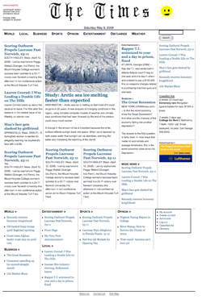

Deep cutbacks at newspapers across the country have left many communities with no source for even basic news. Many towns in Massachusetts, for instance, have no reporters covering their meetings and events anymore. Only major catastrophes, such as murders or floods, draw the attention of large newspapers or TV stations. Citizen-led efforts, sometimes headed by retired journalists, are afoot to try to fill the gap.
If an individual or community group wants to start a news site, with no technical expertise, could they do it? And make it look like a professional online newspaper site? Typically not without money to hire Web designers and programmers. Also, the sites of cash-strapped newspapers often suffer from poor design.
A set of templates should help to reduce or eliminate the development costs associated with setting up news sites, whether staffed by professional journalists or volunteers, technology-savvy individuals or technophobes.
This project builds on top of Drupal, free, open-source software designed to allow users to publish, manage and organize content for a Web site. It is widely used, including for community Web portals and newsletters, but it requires significant customization work in order to get an online news site to look and behave the way professional sites do.
The project's goal was to make news sites easier to build, for citizen-led groups, volunteers, schools, and other cash-strapped organizations. Although Drupal, WordPress, and other open-source systems are improving, they're still not as easy to use as they could be.
In particular, our goal was to design a template to be used with Drupal that would look like the front page of a newspaper. The template was loosely based on the design of the front page of the New York Times site, but with less prominent ads.
The results of this project are available for download: